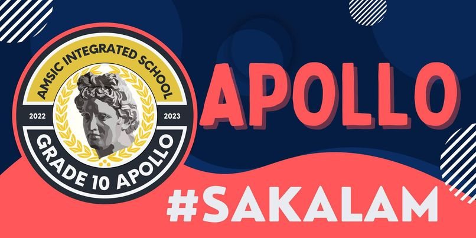
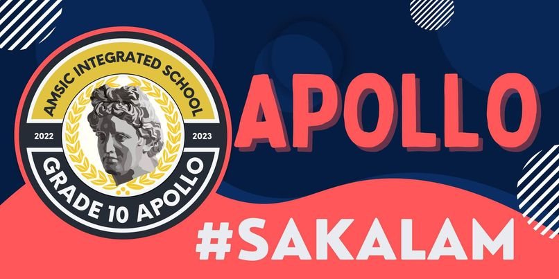

Quarter 1
Una Sobra naming tahimik na parang di tulad ngayon na nanguguna na
sa lakas ng boses na kahit na mga teacher di matatangi Nagdasal at
nagkaroon ng act activity kung saan may mga players na mag aact at
ang mga audience ang mag bibigay ng answer kung ano yung nakita nila
yun din yung ibibigay din nilang sagot
